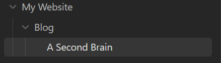
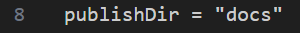
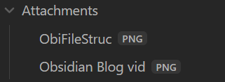
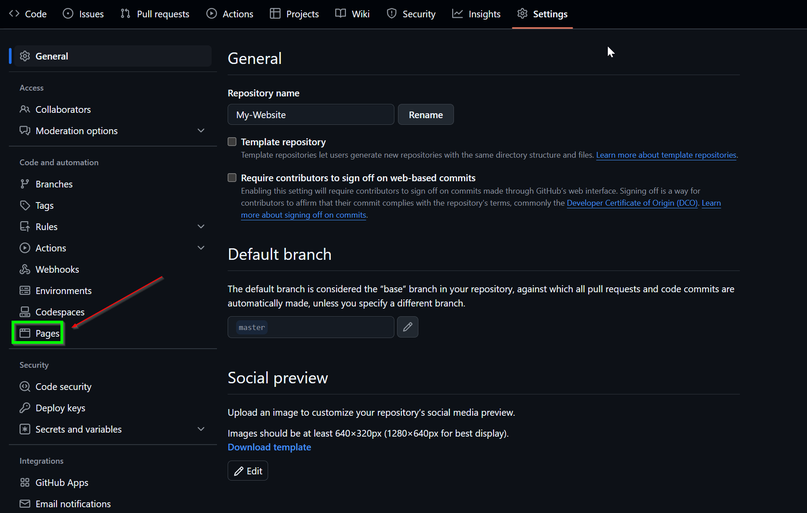
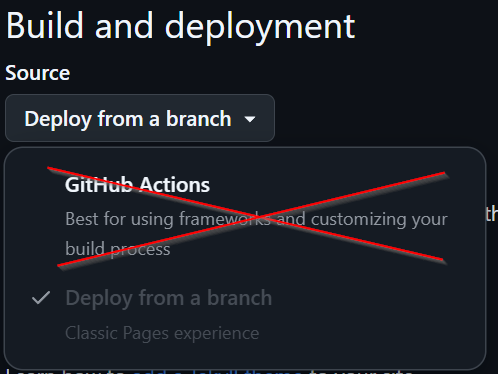
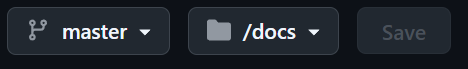
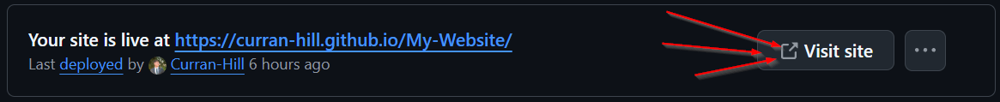

The Inspiration Link to heading
NetworkChuck has some of my favorite videos on YouTube. In a somewhat recent video he details how to start a blog using Obsidian, Hugo, GitHub, and Hostinger.

However, I like free. Because of this, Hostinger is out of the question as it is a paid website hosting source. But you’re reading this now aren’t you? So how did I do it? In this article, it is all laid out for you.
Disclaimer Link to heading
The majority of the steps outlines in this article are the same or very similar the NetworkChuck’s video. All credit goes to him and you should really check him out I also use two scripts, one Python and one PowerShell, and they are versions of his scripts with tiny tiny tweaks. Finally, These instructions are for Windows only, Mac and Linux systems have a different set of instructions.
Setting up Obsidian Link to heading
Assuming you already have Obsidian installed, all you need to do is create a new folder for your posts to live in. You can name this anything, but I recommend something like “Blog” or “Posts”.
Here is mine:

Setting up Hugo Link to heading
Before doing anything you need to make sure you have installed Git and Go.
Next install Hugo.
Then create your site by executing:
hugo new site websitename
cd website
Now it’s time to pick your Hugo theme. Pick any theme you want and follow the theme instructions to download.
Most every theme will come with a config file usually labeled .toml or .yaml. Edit these as needed.
Two necessary edits to the config file are as follows:
-
comment out the baseURL line and add relativeURLs = true

-
add or edit the publishDir = “public to publishDir = docs 
Test Hugo Link to heading
Run this command in your website’s directory to verify that everything is working:
hugo server -t themename
Adding Frontmatter to Obsidian Link to heading
Without frontmatter, your posts will have no title and look a bit empty.
To add frontmatter, copy and paste:
---
title: blogtitle
date: 2024-11-06
draft: false
tags:
- tag1
- tag2
---
and change information as needed.
Handling Images Link to heading
As they are now, your images will not cleanly transfer from Obsidian to your blog. To fix this we will run a Python script. Make sure that in Obsidian you have a set destination for all attachments, like this:  Also, in you websites /static folder, create a subfolder called /images
For the Python script, in your websites main directory create a file called images.py and paste this:
import os
import re
import shutil
# Paths (using raw strings to handle Windows backslashes correctly)
posts_dir = r"C:\Path\to\blog\posts\folder"
attachments_dir = r"C:\Pat\to\Obsidian\attachments\folder"
static_images_dir = r"C:Path\to\static\images"
# Step 1: Process each markdown file in the posts directory
for filename in os.listdir(posts_dir):
if filename.endswith(".md"):
filepath = os.path.join(posts_dir, filename)
print(f"Processing file: {filepath}")
with open(filepath, "r", encoding="utf-8") as file:
content = file.read()
# Step 2: Find all image links in the format 
images = re.findall(r'\[\[([^]]*\.png)\]\]', content)
print(f"Found images: {images}")
# Step 3: Replace image links and ensure URLs are correctly formatted
for image in images:
# Prepare the Markdown-compatible link with %20 replacing spaces
markdown_image = f"})"
content = content.replace(f"![[{image}]]", markdown_image)
# Step 4: Copy the image to the Hugo static/images directory if it exists
image_source = os.path.join(attachments_dir, image)
if os.path.exists(image_source):
print(f"Copying {image_source} to {static_images_dir}")
shutil.copy(image_source, static_images_dir)
else:
print(f"Image not found: {image_source}")
# Step 5: Write the updated content back to the markdown file
with open(filepath, "w", encoding="utf-8") as file:
file.write(content)
print("Markdown files processed and images copied successfully.")
Remember to edit the file paths present at the top of the script! Link to heading
Git GitHub and Git Authenticated Link to heading
After creating a GitHub account if you don’t already have one, create a repository. Then run:
ssh-keygen -t rsa -b 4096 -C "example@email.com"
Big Ol’ Script Link to heading
This script will automate the entire process. From Obsidian all the way to GitHub. Name the script something like updateblog.ps1
# PowerShell Script for Windows
# Set variables for Obsidian to Hugo copy
$sourcePath = "C:\Path\to\your\obsidian\blog\folder"
$destinationPath = "C:\Path\to\your\website\posts\folder"
# Set Github repo URL
$myrepo = "git@github.com:GitHubUsername/Repository.git"
# Set error handling
$ErrorActionPreference = "Stop"
Set-StrictMode -Version Latest
# Change to the script's directory
$ScriptDir = Split-Path -Parent $MyInvocation.MyCommand.Definition
Set-Location $ScriptDir
# Check for required commands
$requiredCommands = @('git', 'hugo')
# Check for Python command (python or python3)
if (Get-Command 'python' -ErrorAction SilentlyContinue) {
$pythonCommand = 'python'
} elseif (Get-Command 'python3' -ErrorAction SilentlyContinue) {
$pythonCommand = 'python3'
} else {
Write-Error "Python is not installed or not in PATH."
exit 1
}
foreach ($cmd in $requiredCommands) {
if (-not (Get-Command $cmd -ErrorAction SilentlyContinue)) {
Write-Error "$cmd is not installed or not in PATH."
exit 1
}
}
# Step 1: Check if Git is initialized, and initialize if necessary
if (-not (Test-Path ".git")) {
Write-Host "Initializing Git repository..."
git init
git remote add origin $myrepo
} else {
Write-Host "Git repository already initialized."
$remotes = git remote
if (-not ($remotes -contains 'origin')) {
Write-Host "Adding remote origin..."
git remote add origin $myrepo
}
}
# Step 2: Sync posts from Obsidian to Hugo content folder using Robocopy
Write-Host "Syncing posts from Obsidian..."
if (-not (Test-Path $sourcePath)) {
Write-Error "Source path does not exist: $sourcePath"
exit 1
}
if (-not (Test-Path $destinationPath)) {
Write-Error "Destination path does not exist: $destinationPath"
exit 1
}
# Use Robocopy to mirror the directories
$robocopyOptions = @('/MIR', '/Z', '/W:5', '/R:3')
$robocopyResult = robocopy $sourcePath $destinationPath @robocopyOptions
if ($LASTEXITCODE -ge 8) {
Write-Error "Robocopy failed with exit code $LASTEXITCODE"
exit 1
}
# Step 3: Process Markdown files with Python script to handle image links
Write-Host "Processing image links in Markdown files..."
if (-not (Test-Path "images.py")) {
Write-Error "Python script images.py not found."
exit 1
}
# Execute the Python script
try {
Write-Host "Executing Python script images.py..."
& $pythonCommand images.py
Write-Host "Python script executed successfully."
} catch {
Write-Error "Failed to process image links."
Write-Error $_.Exception.Message
exit 1
}
# Step 4: Build the Hugo site
Write-Host "Building the Hugo site..."
try {
hugo
} catch {
Write-Error "Hugo build failed."
exit 1
}
# Step 5: Add changes to Git
Write-Host "Staging changes for Git..."
$hasChanges = (git status --porcelain) -ne ""
if (-not $hasChanges) {
Write-Host "No changes to stage."
} else {
git add .
}
# Step 6: Commit changes with a dynamic message
$commitMessage = "New Blog Post on $(Get-Date -Format 'yyyy-MM-dd HH:mm:ss')"
$hasStagedChanges = (git diff --cached --name-only) -ne ""
if (-not $hasStagedChanges) {
Write-Host "No changes to commit."
} else {
Write-Host "Committing changes..."
git commit -m "$commitMessage"
}
# Step 7: Push all changes to the main branch
Write-Host "Deploying to GitHub Master..."
try {
git push origin master
} catch {
Write-Error "Failed to push to Master branch."
exit 1
}
Write-Host "All done! Site synced, processed, committed, built, and deployed."
Remember to edit the file paths & GitHub Repo present at the top of the script! Link to heading
Make sure this script is in the same directory as the images.py script from earlier and
GitHub Pages Link to heading
After running the mega script using
.\updateblog.ps1
go to your GitHub repo and navigate to the repository settings. You are looking for the “Pages” tab. 
Under Build and Deployment choose Deploy from a branch 
Then choose master and /docs 
And finally, visit your site! 